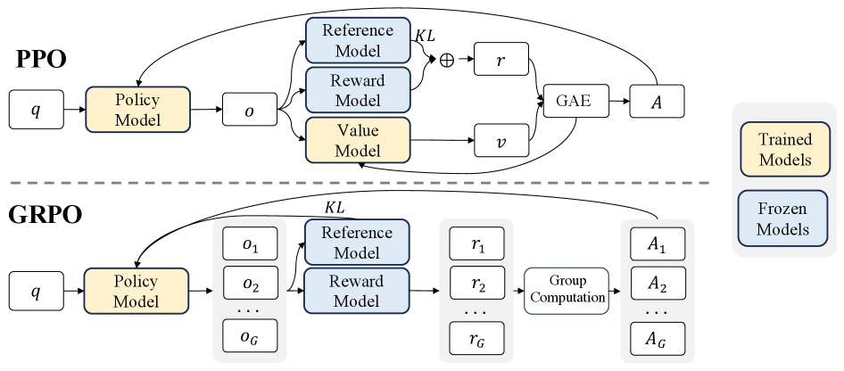

1.5 GRPO — RLVR 的奠基算法¶
本节摘要
GRPO（Group Relative Policy Optimization）消除了昂贵的 Critic 价值网络，通过对同一题目采样一组回答并计算组内相对奖励来估计优势函数，配合规则验证器成为 RLVR 范式的奠基算法。本节详解其目标函数、优势变体、KL 散度估计器以及硬裁剪导致稀有推理词梯度归零的数学根因。
论文：GRPO
DeepSeekMath: Pushing the Limits of Mathematical Reasoning in Open Language Models (Shao et al., 2024)
arXiv: 2402.03300
历史地位: Value-Free（无价值网络）大模型 RL 主流路线的开创者，DeepSeek-R1 的核心优化算法。
核心思想¶

GRPO 的核心洞察是：既然训练一个独立的 Critic 网络来预测“这道题平均能拿多少分”又贵又不准，不如直接让当前策略对同一道题采样一组（Group）共 \(G\) 个回答，用这组回答的平均得分作为天然基线（Baseline）。
概念辨析：Value-Free（去 Critic）与 RM-Free（去神经网络奖励模型）
观察上方 DeepSeekMath 原图可以发现，图中 GRPO 依然画有蓝色的 Reward Model。这是因为在算法结构上：
- GRPO 本身解决的是 Value-Free：用组内统计量替代可训练的 Critic 网络 \(V_\psi\)，将 4 模型精简为 3 模型；它的奖励 \(R_i\) 既可以来自神经网络 RM（用于通用对话对齐），也可以来自确定性规则；
- 当 GRPO 与 RLVR 结合时（如 DeepSeek-R1 推理阶段）：图中冻结的 Reward Model 被进一步替换为数学等价判定或代码测试沙箱，从而同时实现 Value-Free + Neural-RM-Free，GPU 上只需保留 \(\pi_\theta\)（或再加一个计算 KL 的 \(\pi_{\text{ref}}\)）。
核心公式¶
对每个问题 \(q\)，从旧策略 \(\pi_{\theta_{\text{old}}}\) 独立采样一组 \(G\) 条完整回答 \(\{o_1, o_2, \ldots, o_G\}\)，GRPO 目标函数定义为：
其中逐 token 重要性采样比率为：
组内相对优势（Outcome Supervision）¶
在最常用的结果监督（Outcome Reward）设置下，每条回答 \(o_i\) 获得一个标量总奖励 \(R_i\)，构成集合 \(\mathbf{R} = \{R_1, R_2, \ldots, R_G\}\)。第 \(i\) 条回答内的所有 token 共享同一个组内标准化优势：
其中 \(\epsilon_{\text{std}}\) 是防止全组得分相同时除零的极小常数（如 \(10^{-8}\)）。
📖 初学者补充：手算一个 Group Relative 例子，以及“要不要除以标准差”的争议
直观算例：对问题 "求 √144"，设组大小 \(G=4\)，规则奖励对为 \(+1\)、错为 \(-1\)：
| 采样回答 | 是否正确 | 奖励 \(R_i\) | 组内相对优势 \(\hat{A}_{i,t}\) |
|---|---|---|---|
\(o_1\): "因为 12×12=144，答案是 12" |
正确 | \(+1\) | \(+1\)（整条序列各 token 均受正向鼓励） |
\(o_2\): "答案是 14" |
错误 | \(-1\) | \(-1\)（整条序列各 token 均受负向抑制） |
\(o_3\): "144=12²，所以为 12" |
正确 | \(+1\) | \(+1\) |
\(o_4\): "答案是 11" |
错误 | \(-1\) | \(-1\) |
此时 \(\mathrm{mean}(\mathbf{R}) = 0\)，总体标准差 \(\mathrm{std}(\mathbf{R}) = 1\)，无需任何 Critic 网络就干净地分出了鼓励和抑制的方向。
进阶细节——为什么要关注分母上的 \(\mathrm{std}(\mathbf{R})\)？ 对于 \(0/1\) 二元奖励，若一道题在组内的通过率为 \(\hat{p} \in (0,1)\)，组内标准差就是 \(\sqrt{\hat{p}(1-\hat{p})}\)。如果保留除以 \(\mathrm{std}(\mathbf{R})\)，极难或极易题（如 16 次里偶然蒙对 1 次，或简单题偶发 1 次格式错，\(\hat{p} \to 0\) 或 \(1\)）分母极小，那条异类样本的梯度权重会被显著放大；反之，如果不除以标准差、只减均值 \(\hat{A}_{i,t} = R_i - \mathrm{mean}(\mathbf{R})\)，成功率居中的题目天然拥有最大方差与权重。因此 Dr. GRPO（arXiv:2503.20783）以及后来的 DeepSeek-V3.2（arXiv:2512.02556）都采用了不除标准差的只减均值形式。另外注意：当全组全对或全错时，分子恒为 \(0\)，无论加多小的 \(\epsilon_{\text{std}}\)，优势均为 \(0\)，该题不产生任何有效梯度。
GRPO 的 KL 散度估计器与 Off-Policy 修正¶
与 PPO 常把 KL 写进即时奖励不同，GRPO 直接在目标函数中减去逐 token 的 Schulman K3 散度估计器：
由不等式 \(u - \log u - 1 \ge 0\)（在 \(u=1\) 取等），该估计项恒非负且方差低：
- On-policy 条件下（当 \(o_{i,t}\) 采样自当前 \(\pi_\theta\) 时）：对 \(o_{i,t} \sim \pi_\theta\) 取期望，第一项期望为 \(\sum \pi_\theta \frac{\pi_{\text{ref}}}{\pi_\theta} = 1\) 与末尾的 \(-1\) 精确抵消，剩下 \(-\mathbb{E}_{\pi_\theta}[\log \frac{\pi_{\text{ref}}}{\pi_\theta}] = \mathrm{KL}(\pi_\theta \| \pi_{\text{ref}})\)，因此它是 KL 散度数值的无偏估计；
- Off-policy 多步更新条件下（当 \(o_{i,t}\) 实际采样自旧策略 \(\pi_{\theta_{\text{old}}}\) 且 \(\pi_\theta \neq \pi_{\theta_{\text{old}}}\) 时）：直接对上式求导会产生偏差——尤其当 \(\pi_\theta \ll \pi_{\text{ref}}\) 时，第一项求导带来的 \(-\frac{\pi_{\text{ref}}}{\pi_\theta}\nabla_\theta \log \pi_\theta\) 权重无界放大，易引发震荡。为此，DeepSeek-V3.2 在外层乘上了重要性采样比率做校正：
乘上 \(\frac{\pi_\theta}{\pi_{\theta_{\text{old}}}}\) 后，对 \(\theta\) 的梯度在 \(\pi_{\theta_{\text{old}}}\) 采样下恢复严格无偏（见 2.1 节 DeepSeek-V3.2）。
为什么这么设计¶
| 设计决策 | 核心动机 | 解决的实际问题 |
|---|---|---|
| 消除 Critic 网络 | 稀疏终局奖励下 Critic 难训且与 Actor 同规模 | 节省约 25%–50% 训练显存与通信开销，使 671B 级大模型 RL 可行 |
| 组内相对奖励 | 二元对错或标量打分天然适合同题横向比较 | 无需学习绝对价值函数即可获得去中心化的低方差基线 |
| 配合规则验证器 | 数学与代码有客观真值，无需拟合偏好网络 | 避免神经网络 RM 的打分盲区与 Reward Hacking |
| 保留 PPO 裁剪 | 限制多步 mini-batch 更新幅度 | 防止单步策略突变崩溃 |
GRPO 留下的三大局限¶
- Hard Clipping 抹杀稀有推理词梯度：被裁剪到区间外的 token 梯度直接归零，导致低初始概率的关键“反思转折词”（如
"However","Wait"）学不动； - Sample-Level 长度归一化偏差与全对/全错空转：先对每条样本除以 \(|o_i|\) 再对组取平均，使长回答中的单个 token 梯度被稀释；而全对/全错组优势全为 \(0\)，浪费大量采样算力；
- Token-Level IS 在 MoE 与超长序列上高方差且归因粗糙：逐 token 重要性比率在 MoE 路由跳变时剧烈抖动（催生 GSPO/SAPO）；同时整条序列共享同一标量优势，无法区分长链内部哪一步真正立功（催生 VAPO 与 Agentic 信用分配算法）。
📖 深入推导：为什么 Hard Clipping 会让低概率“分岔词”的梯度归零？
单独看 PPO/GRPO 对某个 token 的替代目标项：
利用恒等式 \(\nabla_\theta r_t(\theta) = \frac{\nabla_\theta \pi_\theta}{\pi_{\theta_{\text{old}}}} = \frac{\pi_\theta}{\pi_{\theta_{\text{old}}}} \nabla_\theta \log \pi_\theta = r_t(\theta) \nabla_\theta \log \pi_\theta\)：
- 当落在未裁剪分支时，\(\nabla_\theta L_t = r_t(\theta) \hat{A}_t \nabla_\theta \log \pi_\theta(o_t \mid \cdots)\)；
- 当 \(\hat{A}_t > 0\) 且 \(r_t(\theta) > 1 + \varepsilon\) 时，
min选中右侧 \((1+\varepsilon)\hat{A}_t\)——注意这里完全不含参数 \(\theta\)，是一个纯常数，因此 \(\nabla_\theta L_t(\theta) = \mathbf{0}\)！
所以硬裁剪在梯度上等价于乘了一个非黑即白的二值掩码 \(M_t \in \{0, 1\}\)：
对稀有反思词的不对称打击：假设 \(\varepsilon = 0.2\)。一个常见连接词 "Therefore" 旧概率为 \(\pi_{\text{old}} = 0.50\)，它可以一路涨到 \(0.60\)（绝对概率 \(+10\%\)）才触发 \(1.2\) 倍裁剪；而触发自我纠错的关键转折词 "Wait" 在基座中初始概率可能只有 \(\pi_{\text{old}} = 0.005\)，当它的概率仅仅微弱涨到 \(\pi_\theta = 0.0065\)（绝对概率还不到 \(0.7\%\)）时，比率 \(r_t = 1.3 > 1.2\) 就已经越界，在本轮后续所有 mini-batch 更新中梯度永久归零！这就是后续 DAPO（Clip-Higher）、CISPO（只裁权重不丢梯度） 与 SAPO（平滑软门控） 接力攻克的核心病灶。